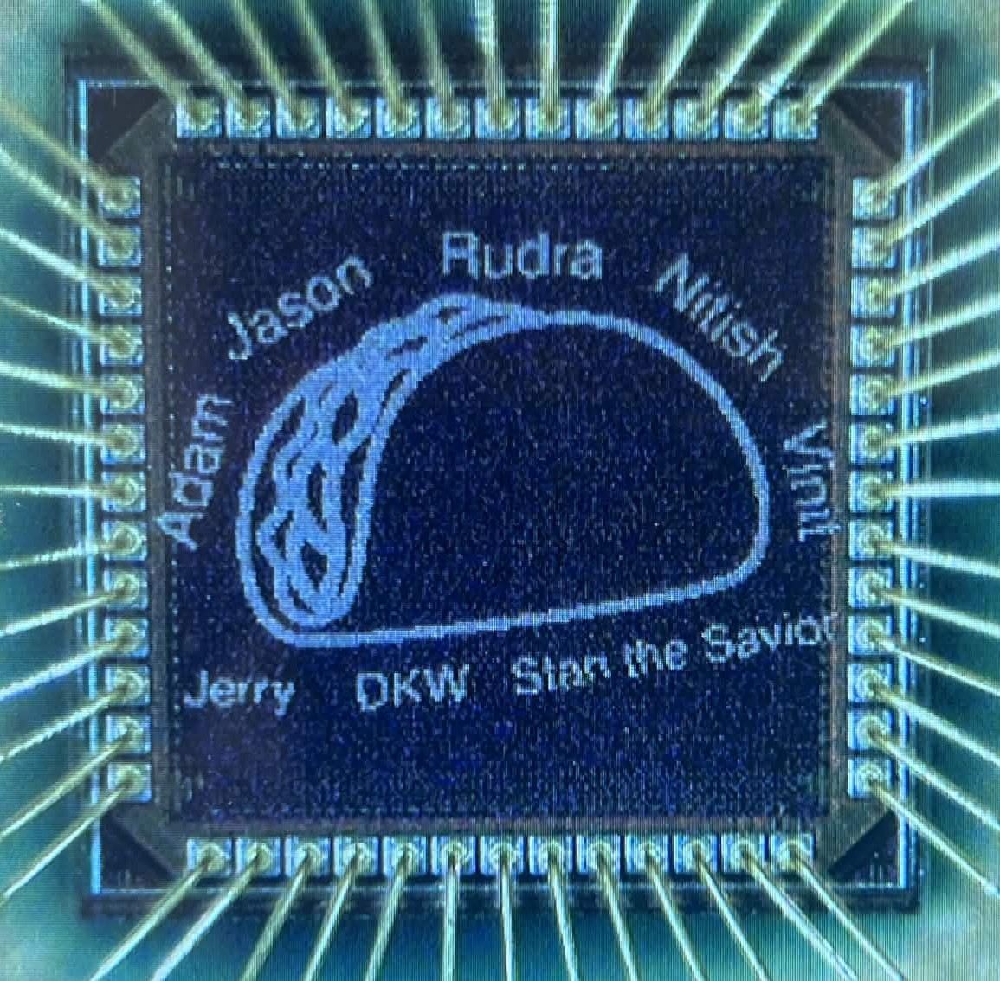
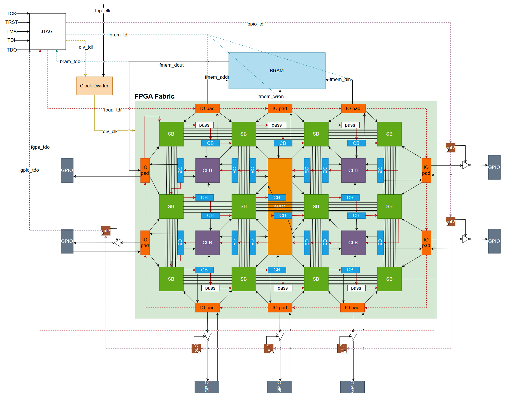
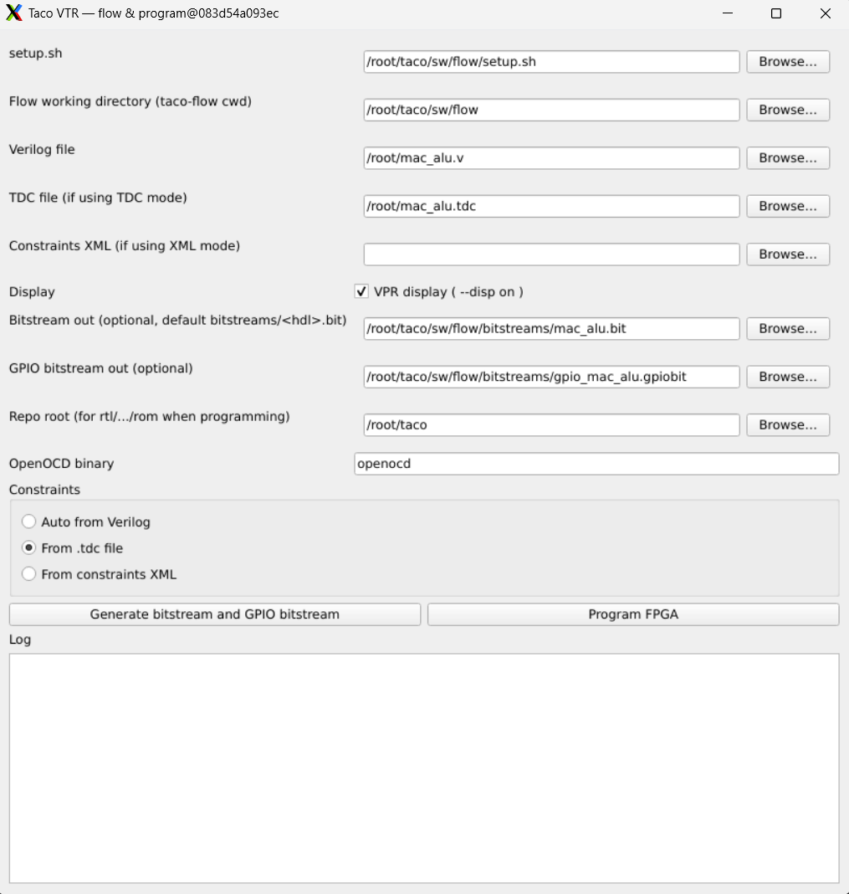
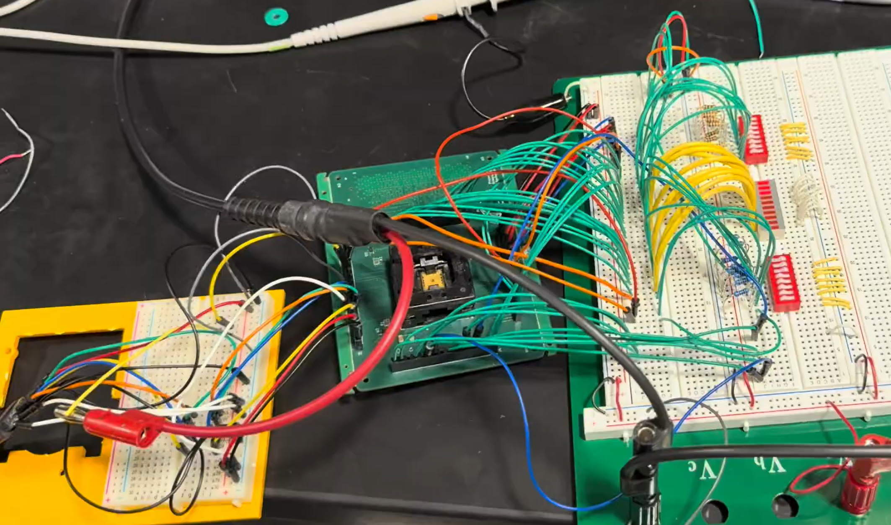

Tiled Architecture of Configurable Operators (TACO) - A Custom FPGA Tapeout
A 65nm custom FPGA with a VTR-based toolchain, GUI, JTAG programming, and post-silicon bring-up.
TACO (Tiled Architecture of Configurable Operators) is a custom FPGA we designed, verified, taped out, and brought up in the TSMC 65nm process for ECE 427. The chip combines a small reconfigurable fabric with hard arithmetic and memory IPs, plus a custom Verilog-to-bitstream flow that lets users compile, program, and test real RTL designs on silicon.
This page is a concise summary of the project. For the full architecture, verification details, and bring-up methodology, see the final report. Hugh shoutout to my amazing teammates Nitish Bhupathi Raju, Vinit Gupta, Feiyang Liu, and Rudra Thakkar! We built this project from the ground up, starting with architecture definition and microarchitecture design, then moving through RTL implementation, verification, physical design, tapeout, and post-silicon bring-up. Most importantly, we had a lot of fun in this process!

What We Built
TACO is centered on an 18 x 17 FPGA-style fabric with 288 configurable logic blocks. Each CLB contains a 4-input LUT, a flip-flop, and a mux for selecting combinational or sequential behavior. Around the fabric, we added an 8-track routing network, programmable GPIOs, JTAG-based configuration, a selectable clock divider, and test hooks for bring-up/debug.
Key chip specs:
- 288 CLBs, each with one LUT4, one FF, and an output mux.
- 8-wide routing channels using connection boxes and switch boxes.
- 39 programmable GPIO pins, plus dedicated input/output pins.
- 1 KB on-chip BRAM with JTAG read/write support.
- 9 in-fabric MAC units for arithmetic-heavy designs.
- 64 selectable clock-divider settings.
- 708 x 708 um core site with 85.756% utilization.
- Estimated power: 7.214 mW.

Toolchain and GUI
We built an end-to-end compiler/programming flow around open-source VTR tools. Yosys synthesizes Verilog, VPR handles placement and routing against our FPGA architecture, and custom Python packages convert the generated outputs into TACO bitstreams. The flow also generates GPIO configuration data and can program the chip through OpenOCD.
To make the chip easier to use, we packaged the flow behind both a CLI and a simple GUI. From the GUI, a user can select a Verilog file and optional constraint file, generate the fabric/GPIO bitstreams, and program TACO without manually stepping through the underlying scripts. The full environment is Dockerized so the toolchain can be reproduced.

Bring-Up Results
Post-silicon validation was successful. We designed a custom bring-up PCB, first controlled the chip through a VCU118 host FPGA, and then brought up independent JTAG programming through a Digilent JTAG-HS3 cable and OpenOCD.
What worked on hardware:
- Reliable JTAG communication, CSR readback, and fabric programming.
- Basic mapped logic gates after correcting GPIO pin mappings.
- Complex logic like 8-bit ALU passing on a synthesizable constrained random testbench on VCU118.
- An 8-bit ALU running on TACO with switches as inputs and LEDs as outputs.
- BRAM access from both JTAG and fabric logic.
- MAC-unit validation with a mapped arithmetic circuit.
- A two-chip cascade demo, with one TACO driving logic into another TACO.
- A simple NOT-gate circuit running correctly up to 250 MHz.
The 250 MHz result was limited by the maximum rated frequency of the PCB differential transceivers, not necessarily by the silicon itself. Verifying the true fabric limit would require a higher-bandwidth bring-up board.

Takeaway
The project went beyond a paper design: we taped out the chip, built a board, wrote the compiler flow, programmed silicon, and ran real mapped circuits. The most satisfying part was seeing the system become usable end-to-end: Verilog in, bitstream out, OpenOCD programming, and visible hardware behavior on the bench.